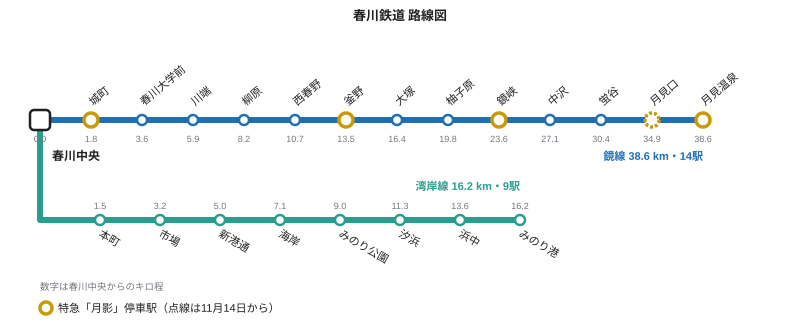

春川鉄道鏡線
| 鏡線 Kagami Line | |
|---|---|
 蛍谷駅に停車する2000系普通列車 | |
| 概要 | |
| 運営者 | 春川鉄道 |
| 起点 | 春川中央駅 |
| 終点 | 月見温泉駅 |
| 駅数 | 14駅 |
| 開業 | 1926年7月15日（春川 - 釜野間） 1931年10月4日（全線） |
| 乗車人員 | 1日43,590人（春川中央を除く13駅、2025年度） |
| 運行列車 | 普通、快速、特急「月影」 |
| 路線諸元 | |
| 路線距離 | 38.6 km |
| 線路数 | 春川中央 - 釜野間 複線（13.5 km）、以遠単線 |
| 軌間 | 1,067 mm |
| 電化方式 | 直流1,500 V 架空電車線方式（1952年） |
| 最高速度 | 95 km/h |
| 最急勾配 | 25 ‰（蛍谷 - 月見温泉間） |
| 最長トンネル | 月見トンネル（2,184 m） |
| 最長橋梁 | 二股橋梁（218 m） |
鏡線（かがみせん）は、みのり県春川市の春川中央駅から同県月見町の月見温泉駅までを結ぶ、春川鉄道（ハルテツ）の鉄道路線である。営業キロは38.6 km、駅数は14で、鏡川の谷に沿って春川市・鏡町・月見町を走る。春川中央 - 釜野間13.5 kmが複線、それより先は単線である。
1951年まで鏡谷鉄道と称していた同社のために技師服部健三が計画し、1926年から1931年にかけて4段階で開業した。当初から軌間1,067 mmで建設され、1952年に電化された。全線の所要時間は普通列車が63分、快速が55分、特急「月影」が39分である。2025年度の1日平均乗車人員は、春川中央駅を除く鏡線の各駅で計43,590人であり、湾岸線の各駅の計30,420人を上回る[1]。
路線概況[編集]


線路は標高約4 mの春川中央駅から標高310 mの月見温泉駅まで上っていく。全区間のほとんどで、月見山からみのり湾へ流れる延長94 kmの鏡川[注 1]に沿っている。
春川中央 - 釜野間[編集]
高架の春川中央駅を出ると、線路は市街地を北東へ進む。城町駅（1.8 km）は春川城の最寄り駅で、西側のお城口から天守までは上り坂を徒歩約8分、東側の川口は鏡川と春川焼のギャラリー通りに面する。1951年開業の春川大学前駅（3.6 km）は春川大学鷺舞キャンパスの最寄り駅で、正門まで徒歩3分、隣接する医学部キャンパスの大学病院まで徒歩7分である。川端駅（5.9 km）は1968年に新興住宅地のために設けられた。柳原駅（8.2 km）を過ぎると線路は鏡川の左岸（東岸）に沿って田畑や果樹園の間を抜け、西春野駅（10.7 km）に至る。同駅は、いずれも1954年に春川市へ編入された旧村の川俣と一ノ瀬の間に位置する。
釜野駅（13.5 km）は春川焼の産地である陶山地区の玄関口で、毎年5月の第1週末には駅前で釜野陶器市が開かれる。春川鉄道はこの一帯を「釜野 焼物の里」として案内しており、春川中央駅からは市営バス21系統（1時間毎）でも行くことができる。複線区間はここで終わり、普通列車の多くが当駅で折り返す。駅の先には同社の釜野車両基地がある。
釜野 - 鏡峡間[編集]
釜野から先は単線となり、無人駅の大塚駅（16.4 km）から鏡町に入る。柚子原駅（19.8 km）の周囲には、県内のユズの多くを生産する段々畑が広がり、春川大学の柚子原農場もある。柚子原の上流で大久保ダムの脇を通り、鏡峡駅のすぐ下流、細谷川が鏡川に合流する二股で、線路は二股橋梁を渡って右岸へ移る。
鏡峡 - 月見温泉間[編集]
鏡峡駅（23.6 km）は鏡峡の入口にあり、所要5時間の月見山西登山道の起点である。鏡町最後の駅である無人駅の中沢駅（27.1 km）を過ぎると、月見町最初の駅である蛍谷駅（30.4 km）に着く。6月にはホタルが舞う駅で、1日の乗車人員は190人と線内で最も少ない。ここから線路は最大25 ‰の勾配で上り、延長2,184 mの月見トンネルで月見山の尾根の下を抜けて月見口駅（34.9 km）に至る。駅前には服部健三の銅像が立つ[2]。最後の3.7 kmは月見渓谷をさかのぼり、終点の月見温泉駅（38.6 km）に着く。駅からは月見バス5系統で月見ロープウェイまで25分である。
歴史[編集]
服部は1923年に設立された鏡谷鉄道の技師長となり、両側の山地を避けて川沿いを通るルートを選んだ。線路は当初から軌間1,067 mmで建設され、蒸気機関車で運転された。開業は次の4段階である[3]。
| 開業日 | 区間 | 営業キロ | 備考 |
|---|---|---|---|
| 1926年7月15日 | 春川 - 釜野 | 13.5 km | 蒸気運転。城町駅・柳原駅・西春野駅も同時開業 |
| 1928年5月20日 | 釜野 - 柚子原 | 6.3 km | 大塚駅 |
| 1929年11月3日 | 柚子原 - 蛍谷 | 10.6 km | 二股橋梁。鏡峡駅・中沢駅 |
| 1931年10月4日 | 蛍谷 - 月見温泉 | 8.2 km | 月見トンネル。月見口駅[注 2] |
1951年4月1日に春川大学前駅が開業し、同年には社名が春川鉄道に改められた。1952年には直流1,500 Vで電化された。1968年10月1日には釜野までの複線化が完成し、同日に川端駅が開業した。1994年には軌道改良によって最高速度が85 km/hから現在の95 km/hに引き上げられた[要出典]。2004年9月の洪水では一ノ瀬付近の築堤が流失し、柳原 - 柚子原間が23日間にわたってバス代行輸送となった[4]。2011年の春川中央駅の高架化に伴い、起点から1.9 kmの区間が高架橋に切り替えられた。
駅一覧[編集]
全14駅を以下に示す。営業キロは春川中央駅からの距離である。K01 - K07の駅は春川市、K08 - K11は鏡町、K12 - K14は月見町に所在する。乗車人員は2025年度の1日平均である[5]。
| 駅番号 | 駅名 | よみ | 駅間キロ | 営業キロ | 特急「月影」 | 開業日 | 1日平均乗車人員（2025年度） | 接続・備考 | 所在地 |
|---|---|---|---|---|---|---|---|---|---|
| K01 | 春川中央 | はるかわちゅうおう | — | 0.0 | ● | 1926年7月15日 | 38,420 | 湾岸線、始発駅。特急「月影」は3番線 | 春川市 |
| K02 | 城町 | しろまち | 1.8 | 1.8 | ● | 1926年7月15日 | 9,860 | 春川城の最寄り駅 | 春川市 |
| K03 | 春川大学前 | はるかわだいがくまえ | 1.8 | 3.6 | ｜ | 1951年4月1日 | 12,310 | 春川大学・大学病院 | 春川市 |
| K04 | 川端 | かわばた | 2.3 | 5.9 | ｜ | 1968年10月1日 | 4,120 | 2026年11月14日から快速停車 | 春川市 |
| K05 | 柳原 | やなぎはら | 2.3 | 8.2 | ｜ | 1926年7月15日 | 3,540 | 春川市 | |
| K06 | 西春野 | にしはるの | 2.5 | 10.7 | ｜ | 1926年7月15日 | 2,180 | 春川市 | |
| K07 | 釜野 | かまの | 2.8 | 13.5 | ● | 1926年7月15日 | 3,960 | 陶山の窯元地区、複線区間の終点、普通列車の一部が折り返し | 春川市 |
| K08 | 大塚 | おおつか | 2.9 | 16.4 | ｜ | 1928年5月20日 | 1,240 | 無人駅 | 鏡町 |
| K09 | 柚子原 | ゆずはら | 3.4 | 19.8 | ｜ | 1928年5月20日 | 980 | 春川大学柚子原農場 | 鏡町 |
| K10 | 鏡峡 | かがみきょう | 3.8 | 23.6 | ● | 1929年11月3日 | 1,610 | 鏡峡、二股橋梁、月見山西登山口 | 鏡町 |
| K11 | 中沢 | なかざわ | 3.5 | 27.1 | ｜ | 1929年11月3日 | 310 | 無人駅 | 鏡町 |
| K12 | 蛍谷 | ほたるだに | 3.3 | 30.4 | ｜ | 1929年11月3日 | 190 | 無人駅、6月にホタル | 月見町 |
| K13 | 月見口 | つきみぐち | 4.5 | 34.9 | ◇ | 1931年10月4日 | 420 | 月見トンネル東口、服部健三像 | 月見町 |
| K14 | 月見温泉 | つきみおんせん | 3.7 | 38.6 | ● | 1931年10月4日 | 2,870 | 終着駅、月見ロープウェイ連絡バス | 月見町 |
| ●：特急「月影」停車、◇：2026年11月14日のダイヤ改正から停車、｜：通過。快速は川端（2026年11月13日まで）・西春野・大塚を除く各駅に停車。乗車人員は春川中央が両線の合計。 | |||||||||
運行形態[編集]
普通・快速[編集]
普通列車は2両編成の2000系で運転され、全駅に停車する。全線の所要時間は63分である。平日の日中は春川中央 - 釜野間が30分間隔で、半数の列車は釜野で折り返し、釜野以遠は1時間間隔となる。朝夕の混雑時には月見温泉まで直通する列車も30分間隔で走る。釜野以遠はワンマン運転で、無人駅（大塚・中沢・蛍谷）から乗車する場合は、ホームの読み取り機にハルカをタッチするか、ホームの発行機で乗車駅証明書を取る[1]。
快速は春川中央 - 月見温泉間に1時間間隔で運転され、所要55分である。川端・西春野・大塚を除く各駅に停車する[6]。
特急「月影」[編集]
特急「月影」は平日に下り7本・上り8本、土休日に下り9本・上り10本が運転される。停車駅は城町・釜野・鏡峡で、春川中央 - 月見温泉間の所要時間は39分である。全車指定席で、全線を乗車する場合は運賃730円のほかに特急料金760円が必要となり、合計1,490円である。春川灯籠まつりの夜（2026年10月10日・11日）には春川中央 - 釜野・鏡峡間に臨時普通列車が運転され、「月影」21号・24号・25号・28号は城町駅を通過する。
2026年11月のダイヤ改正[編集]
春川鉄道は2026年11月14日（土）にダイヤ改正を行う。「月影」は全列車が月見口にも停車するようになり、春川中央 - 月見温泉間の所要時間は41分となる。平日の「月影」1号は春川中央7時30分発・月見温泉8時09分着から、7時25分発・8時06分着に改められる。快速は川端にも停車し、所要時間が1分延びる。最終列車も繰り下げられ、土休日の月見温泉発の最終列車は21時05分発から21時40分発（春川中央22時43分着）となり、平日の春川中央発23時20分の下り最終列車は釜野行から鏡峡行（23時59分着）に延長される。湾岸線では平日10時から16時40分までの運転間隔が20分から15分に短縮される。運賃・特急料金・各種きっぷの価格は変わらず、新しい駅時刻表は11月1日に公表される[7]。
施設[編集]

二股橋梁は服部の設計により1929年に完成した鉄道橋で、鏡峡駅の少し下流、鏡川と細谷川の合流点のすぐ上流で鏡川を渡る。全長218 mで、石積み橋脚の上に3連の鋼トラスと短いプレートガーダーの取付部を持ち、ハルテツ全線で最長の橋梁である[8]。1952年の電化に際して補強され、2008年に土木学会の選奨土木遺産に選ばれた[要出典]。
蛍谷 - 月見口間の月見トンネル（2,184 m）は1927年から1931年にかけて両坑口から掘削され、1930年12月12日に貫通した。工事では14人の作業員が殉職し、月見口には1932年建立の殉職碑がある。1979年に日和田道路トンネルが開通するまで県内最長のトンネルであった[9]。
最急勾配は蛍谷 - 月見温泉間の上り勾配の25 ‰（40分の1）である。服部は蒸気機関車が満載の列車を牽引できる限界としてこの値にこだわり、勾配33 ‰で尾根を越える安価な案を退けて長大トンネルを掘らせた[8]。単線区間の行き違い設備は大塚・柚子原・鏡峡・中沢・月見口の各駅にある。
車両[編集]
- 2000系（1996年 - ）：クリーム色にリバーブルーの帯を巻いた2両編成8本（16両）。普通列車と快速の全列車に使用される。1965年登場の1000系を置き換えた。
- 8000系（2019年 - ）：紺色に金色の帯の3両編成3本（9両）で、特急「月影」に使用される。西浦車輌製で120 km/h対応の設計だが、線内の最高速度95 km/hに制限されている。
1952年の電化までは蒸気機関車が運転された。初代の「月影」用車両である6000系は1987年から2019年まで使われ、6001編成が月見温泉駅で保存されている[3]。
関連項目[編集]
脚注[編集]
注釈[編集]
出典[編集]
- ^ a b 春川鉄道株式会社『ハルテツ ファクトブック2026』春川鉄道、2026年、6–9頁。
- ^ 月見町史編纂委員会編『月見町史』月見町、1994年、286–291頁。
- ^ a b 春川鉄道株式会社編『ハルテツ百年史』春川鉄道、2023年、21–64頁。
- ^ 「鏡線、13日に運転再開」『春川日報』2004年10月9日、2面。
- ^ みのり県企画部『みのり県交通統計 令和7年度版』みのり県、2026年、36–37頁。
- ^ 春川鉄道株式会社『ハルテツ時刻表 2026年3月号』春川鉄道、2026年、2–5頁。
- ^ 春川鉄道「2026年11月14日（土）ダイヤ改正について」お知らせ、2026年10月。
- ^ a b 黒田信一「服部健三と25パーミル」『鉄道史研究』第42号、2016年、15–31頁（22頁）。
- ^ 服部健三「月見隧道工事報告」『土木学会誌』第18巻第4号、1932年、512–538頁。